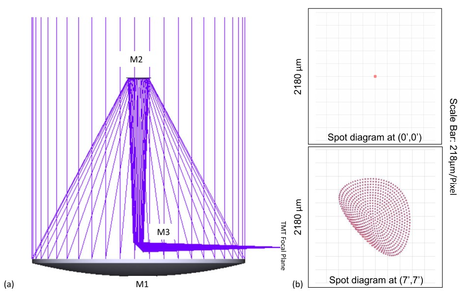
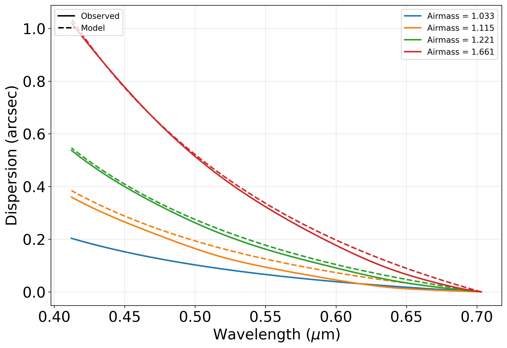
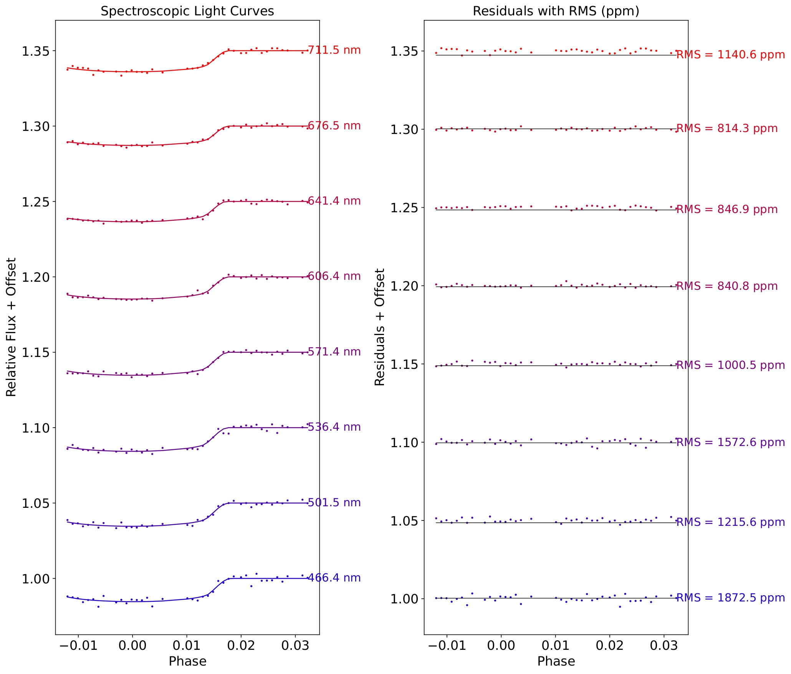
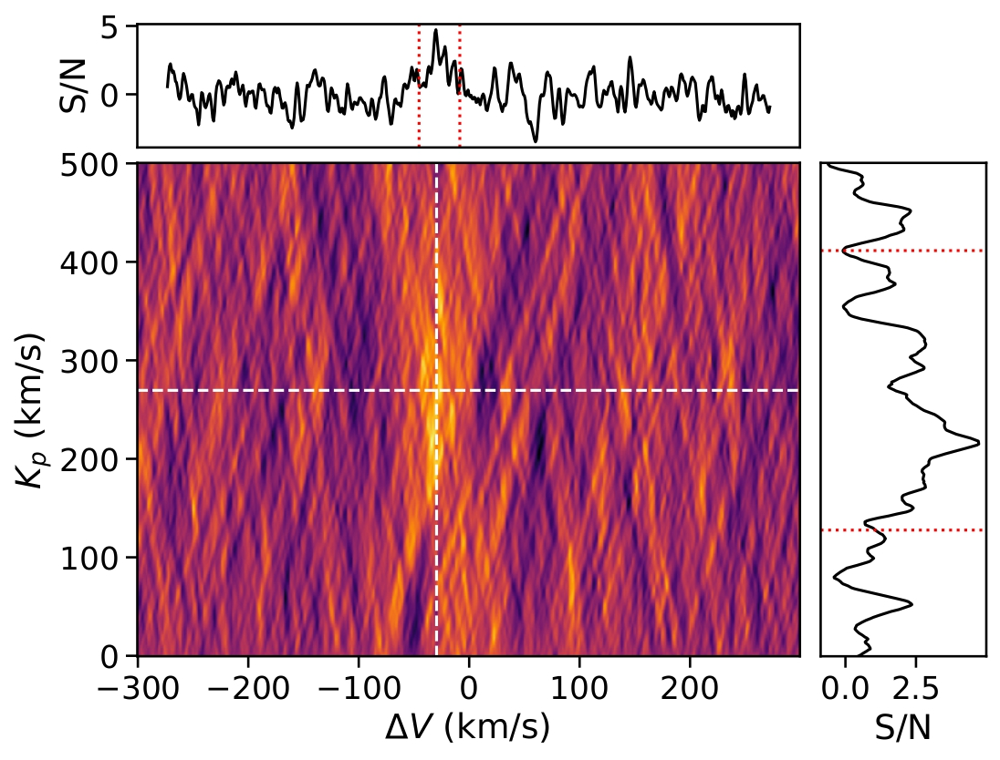
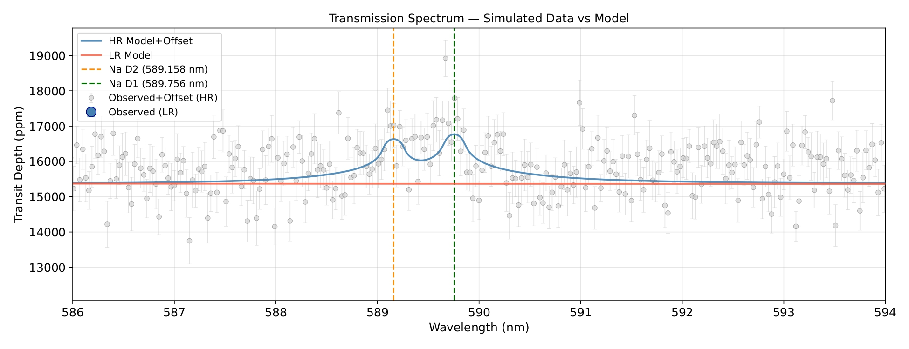
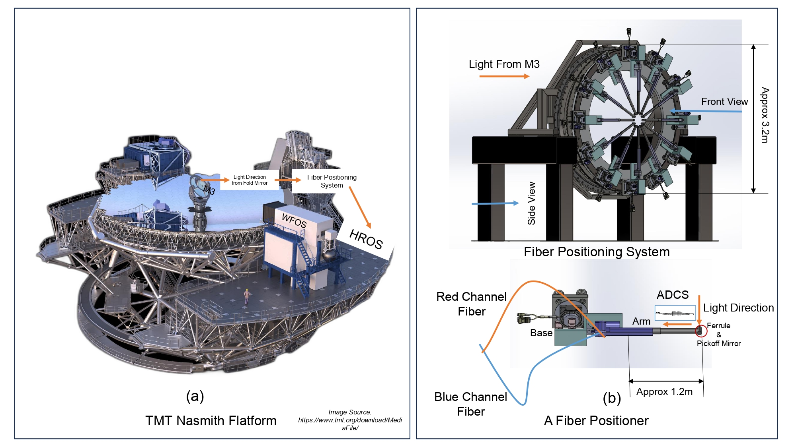

Selected results from my doctoral research on exoplanet transmission spectroscopy, astronomical instrumentation, and observational systematics.

Why it matters: Atmospheric dispersion can significantly affect precision spectroscopy. This design provides a solution for broadband observations with future extremely large telescopes.
I designed and optimized a broadband rotational atmospheric dispersion corrector for the multi-object mode of the High-Resolution Optical Spectrograph proposed for the Thirty Meter Telescope.
The design provides wavelength coverage from 0.31–1.0 µm and maintains residual atmospheric dispersion below 0.25 arcsec over zenith angles from 0° to 60°.

Why it matters: These measurements provide an observational validation of atmospheric-refraction models under the conditions of the Hanle site and are directly relevant for precision spectroscopy and atmospheric dispersion correction.
I carried out direct measurements of atmospheric dispersion at the Hanle observing site using observations obtained with HFOSC on the Himalayan Chandra Telescope.
The measured atmospheric dispersion agrees with the theoretical atmospheric refraction models to within approximately 20 milliarcseconds when accurate site parameters are used.

Why it matters: Exoplanet atmospheric signals are extremely small. Understanding how instrumental effects propagate into transmission spectra is essential for distinguishing genuine planetary signals from observational systematics.
Using observations of WASP-33 b and WASP-12 b obtained with HCT-HFOSC, I investigated elevation-dependent systematics affecting low-resolution multi-object transmission spectroscopy.
The analysis identified instrumental flexure and field-dependent distortions as important sources of systematic error that can affect the recovered transmission spectrum.

Why it matters: KELT-9 b is an ultra-hot Jupiter with an extremely irradiated atmosphere. Detecting ionized species such as Fe II helps probe the composition and physical conditions of its atmosphere.
I developed and applied a high-resolution transmission spectroscopy analysis pipeline to observations obtained with the Hanle Echelle Spectrograph.
The analysis of KELT-9 b shows evidence of a possible Fe II atmospheric signal with a signal-to-noise ratio of approximately three.

Why it matters: This approach provides a possible pathway toward combining the complementary strengths of low- and high-resolution transmission spectroscopy in future multi-object spectroscopic observations.
I developed a simulation-based framework for Multi-Object High-Resolution Transmission Spectroscopy (MO-HRTS).
The simulations demonstrate that both broadband transmission spectra and narrow-band high-resolution atmospheric features can be recovered from a single high-resolution dataset.

Why it matters: Efficient fiber positioning is important for future highly multiplexed spectroscopic facilities, where maximizing The number of simultaneously observed targets directly improves scientific efficiency.
I contributed to the development of a multi-functional fiber-positioning concept for extremely large telescopes, incorporating target allocation, collision avoidance, and corrective optical elements within a unified system.
Simulations demonstrated near-complete target allocation efficiency while supporting multiple observing modes.